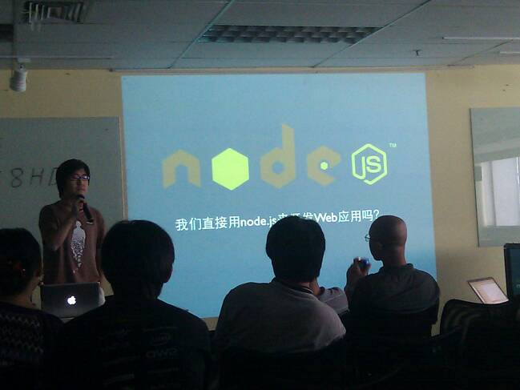
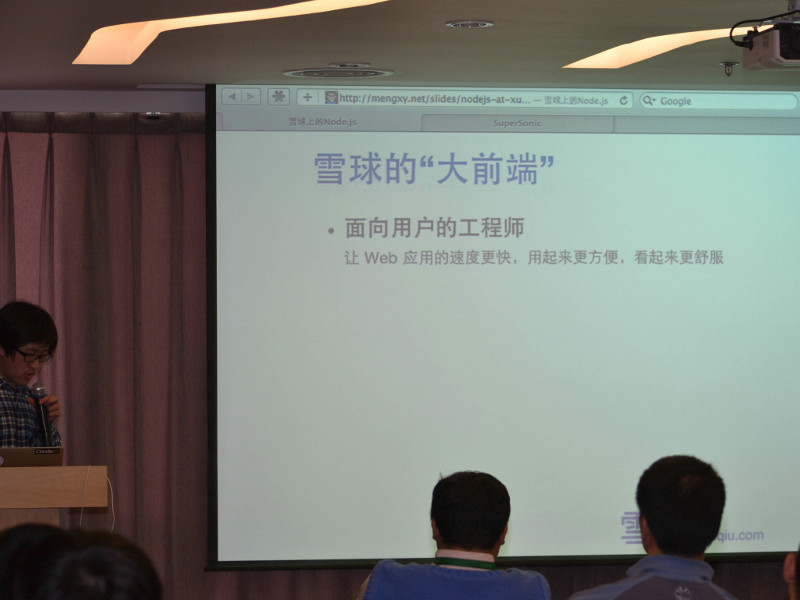
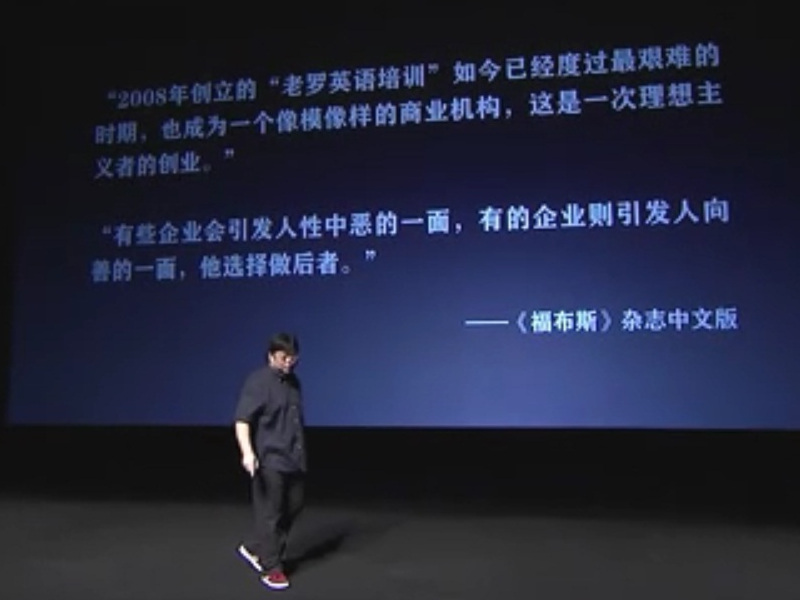
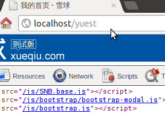
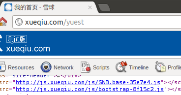

Node.js 雪球实战半年谈
Contents
- About Node.js & Xueqiu.com
- Node on Xueqiu Half Yeah Review
(2011.12 ~ 2012.05)
- Besides Coding
Some notes. They are only visible using onstage shell.
不知道雪球在用Node.js？你。。。你。。。你是社区新人吧
不知道雪球在用Node.js？你。。。你。。。你是社区新人吧
为什么这么说？

@mengxy at NodeParty 2011.07

@mengxy at NodeParty 2011.12
@undoZen at NodeParty 2012.06
Here we are, again.

罗布斯
每年一次的理想主义者奋斗史演讲
不过我们并没有那么大名气，努力中。
全球化的投资交流平台，给投资者提供跨市场、跨品种的数据查询、新闻订阅和互动交流服务，目前已覆盖A股、港股、美股市场。
“价值投资通往财务自由”
我们也是有理想有态度的公司。
雪球 xueqiu.com 是国内少有的将 Node.js 用作生产环境的公司之一
我们会保持技术探索和实践
并将实战经验回馈开源社区
Node.js
Evented I/O for JavaScript.
Proved server-side JavaScript could do great.
FAQ
Question：你们用 node 写后端？
Answer：No. node 只有前端团队在用。后端用 Java。
前端在雪球
“大前端”：面向用户的工程师
目标：看得舒服 用的方便 访问快速
需求与技术
- 看得舒服: HTML/CSS
- 用的方便: client-side JS
- 访问快速: 高效率生成 HTML 等 - server-side JS
- 开发方便迅捷: 合理架构、方便的辅助程序 - server-side JS
我们用 node 做什么
- 处理浏览器请求（Express）
- 获取后端数据（http module）
- 生成 HTML（Jade）
- 开发调试环境（assets）
- 静态文件部署工具（assets、spm、uglify、squash）
我们不用 node 做什么
- 数据处理
后端 JSON 格式 API 支持
页面上 client-side JS 直接请求后端 API
- 身份验证
几乎每个 req 都请求 checkLogin 接口
- 只把 node 用在最合适的地方：如何让前端做的更好，包括产出和过程。
Node Modules
- Express 2.5.x
- jade
- eventproxy
- node-cluster
- connect-assets
- 0.4 upgrade to 0.6
cluster: tj's -> aleafs'
api request: mikeal's -> undoZen's
remove session (proxy to backend)
- developer experience improved
develop environment
bootstrap
connect-assets
seajs
client-side jade
cluster: tj's -> aleafs'
- tj's module name conflicts with 0.6 build-in module
- aleafs' supports seamless restart
cluster: tj's -> aleafs'
//server.js
fs.writeFileSync(pidsDir+'/master.pid', process.pid)
var master = new cluster.Master()
master.register(1234, './current/app.js', { cnum: forkNum })
master.dispatch()
//app.js
if (process.hasOwnProperty('send')) {
require('node-cluster').ready(function(socket) {
app.emit('connection', socket)
})
}
//seamless restart
kill -s USR1 `cat $PIDSDIR/master.pid` #sh
kill -s SIGUSR1 `cat $PIDSDIR/master.pid` #bash
api request: needs
before
r = snowball(req)
r.Request(CONFIG.Domain.base + path, data, ...
I want to type less
req.api()?
req.api('base', path, data, ... ?
finally
req.api.base(path, data, ...
api request: implementation
function Api (req) {
this.req = req
}
Api.prototype.request = function(url/*, ...*/) { /*...*/ }
Object.keys(CONFIG.Domain).forEach(function(domain) {
Api.prototype[domain] = function(path/*, ...*/) {
this.request(CONFIG.Domain[domain] + path/*, ...*/)
}
})
//req.api().base(path, ...)
http.IncomingMessage.prototype.api = function() {
return this._api || (this._api = new Api(this))
}
api request: implementation
function Api (req) {
this.req = req
}
Api.prototype.request = function(url/*, ...*/) { /*...*/ }
Object.keys(CONFIG.Domain).forEach(function(domain) {
Api.prototype[domain] = function(path/*, ...*/) {
this.request(CONFIG.Domain[domain] + path/*, ...*/)
}
})
//req.api.base(path, ...)
http.IncomingMessage.prototype.__defineGetter__('api', function() {
return this._api || (this._api = new Api(this))
})
simplest proxy server in node.js
http.createServer(function(req, res) {
http.request({
hostname: CONFIG.proxyHost
, path: req.url
, method: req.method
, port: CONFIG.proxyPort
, headers: req.headers
}, function(_res) {
res.statusCode = _res.statusCode
Object.keys(_res.headers).forEach(function(name){
res.setHeader(name, _res.headers[name])
}
_res.pipe(res)
})
}).listen(8080)
api request: implementation
res.on('data', function(data) {
buffers.push(data)
len += data.length
})
res.on('end', function() {
var body = new Buffer(len)
, i = 0
buffers.forEach(function (buffer) {
buffer.copy(body, i, 0, buffer.length)
i += buffer.length
})
callback(null, body.toString('utf8'))
})
dev.js
if (needApiProxy) { // 通过比如 req.url 以 'json' 结尾来判断
// ...
needHostAdjust = headers.host != 'xueqiu.com'
if (needHostAdjust) {
if (isApiRequest) {
headers.host = 'api.xueqiu.com'
} else {
headers.host = 'xueqiu.com'
}
}
// http.request(...
Object.keys(_res.headers).forEach(function(name) {
if ('set-cookie' === name && needHostAdjust) {
var _headers = _res.headers[name].map(function(cookie) {
return cookie.replace(/\sdomain=[^\s$]*/gi, '')
})
res.setHeader(name, _headers)
} else {
res.setHeader(name, _res.headers[name])
}
})
principle
- develop environment:
拆分成小文件
不压缩
自动解决依赖，直接引入小文件
- production environment:
自动解决依赖
合并依赖文件
压缩
生成线上版本静态文件
bootstrap
1a. add bootstrap as a dependency in package.json
"bootstrap":
"https://github.com/xueqiu/bootstrap/tarball/master"
1b. add bootstrap as a submodule
git submodule add \
https://github.com/xueqiu/bootstrap.git \
submodules/bootstrap
2. cp node_modules/bootstrap/less/bootstrap.less \
static/style
3. modify @import path, for example:
@import "../../node_modules/bootstrap/less/reset.less";
4.lessc command or connect-assets
connect-assets
1. install using npm, in package.json:
dependencies: { "connect-assets": "latest" }
2. var assets = require('connect-assets')
3. app.use(assets({ src: 'static' })
// 默认 src: 'assets'
4. css.root = 'style'
// 默认 css.root = 'style'
5. in x.jade:
html
head
!= css('bootstrap.css')
// 寻找 static/style/bootstrap.{css,less,styl}
!= js('bootstrap.js')
connect-assets
- 符合前面说的原则
- 开发环境作为直接 serve 静态文件
- 生产环境构建到某一指定目录
- 自动为文件名加版本号
- 自动解决 css 里引用图片的版本号
- css 依赖靠 less/stylus 解决
- 提供一个简单的 JS 依赖解决方案
connect-assets resolve JS dependency
1. static/js/bootstrap.js
//= require bootstrap/bootstrap-modal.js
2. in x.jade:
!= js('bootstrap.js')


resolve JS dependency: assets vs. seajs
//connect-assets
//a.js
window.a = 2
//b.js
window.a = 1
//= require a.js
console.log(window.a)
//actual execution
window.a = 2 //a.js
window.a = 1 //b.js
console.log(window.a)
//seajs
//a.js
define(function(){
window.a = 2
})
//b.js
define(function(require){
window.a = 1
require('a')
console.log(window.a)
})
//html
//<script>seajs.use('b')</script>
spm
npm install spm -g
spm build srcdir --combine --app_url './'
// use spm as a node module
new require('spm').Build([srcdir], {
combine: true
, app_url: './'
, out_path: destdir
, compiler_options: { ascii_only: true }
}).run()
client jade
console.log(jade.compile('p#hello hello, world!', {
client: true
, compileDebug: false }).toString())
function anonymous(locals, attrs, escape, rethrow) {
var attrs = jade.attrs, escape = jade.escape,
rethrow = jade.rethrow;
var buf = [];
with (locals || {}) {
var interp;
buf.push('<p');
buf.push(attrs({ 'id':('hello') }));
buf.push('>hello, world!</p>');
}
return buf.join("");
}
client jade
var t = 'window.Templates = {}'
fs.readdirSync(cjdir).forEach(function(filename) {
var p = path.join(cjdir, filename)
var j = fs.readFileSync(p, 'utf8')
t += 'window.Templates.'+filename+'='+jade.compile(j, {
client: true
, compileDebug: false }).toString()
})
fs.writeFileSync(templatesjspath, t, 'utf8')
client jade
//provided as /js/client/test.jade.js
'define(function(require, exports, module) {\n'
+ jade.compile(content, { client: true, ...
+ '\nmodule.exports = anonymous\n})'
//test.js
define(function (require) {
var tmpl = require('./client/test.jade')
console.log(tmpl({ name: 'World' })
})
//in html
<script>seajs.use('test.js')</script>
//部署到生产环境 ./client/test.jade.js 会并入 test.js
deploy static files
- /tmp/xueqiu-static/preprocessed/js
generate client/*.jade.js
compile *.coffee
concatenate js files
- /tmp/xueqiu-static/compressed/js
compile less files
compress css files using sqwish
compress js files using spm
- CONFIG.StaticDest (nginx serve)
build by connect-assets
next half year
- UI 模块规范化
- 自动测试、持续集成
- Express 3.0? node 0.8?
- 分享下半年经验
Everything is on its place.
Focus on
what won't change.